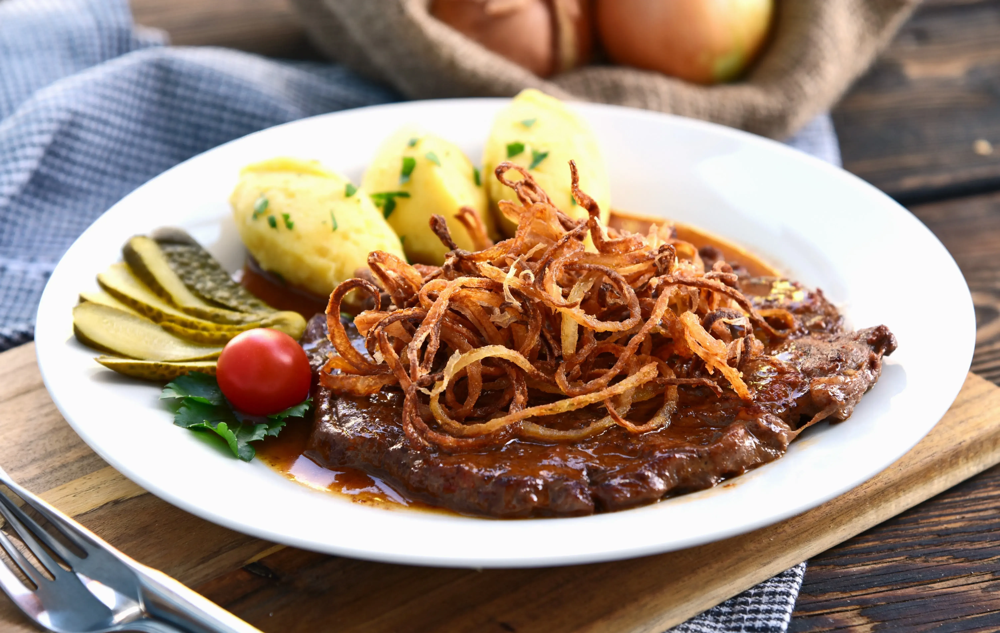

Zurück
Zwiebelrostbraten

Beschreibung
Zwiebelrostbraten ist ein österreichischer Klassiker – saftiges Rindfleisch mit einer würzigen Zwiebelsauce. Perfekt mit Bratkartoffeln oder Kartoffelpüree für echten Genuss!
Zutaten
- 4 Scheiben Rindfleisch
- 500g Zwiebeln
- 400ml Rinderfond
- 250ml Wein, rot
- Etwas Fett oder Öl
- Prise Salz und Pfeffer
- Etwas Mehl
- Öl zum Ausbacken
- Paprikapulver
- Senf
Schritte
- Die Zwiebeln schälen und in dünne Ringe schneiden. Mehl mit Paprikapulver vermischen und die Zwiebelringe darin wenden. Die Ringe nach und nach in reichlich Öl knusprig und goldgelb ausbacken, anschließend zur Seite stellen.
- Das Rindfleisch leicht klopfen und an den Seiten einschneiden. Salzen, pfeffern und eine Seite mit Senf bestreichen. In einer Pfanne Thea Brat- und Saftmeister schön braun werden und das Fleisch von beiden Seiten darin anbraten. Dann das Fleisch herausnehmen. Den Bratensatz mit Rotwein ablöschen. Den Rinderfond und die Hälfte der knusprig ausgebackenen Zwiebeln zugeben und aufkochen lassen. Zuletzt das Fleisch wieder dazu geben. Den Deckel auflegen, die Hitze auf kleine Stufe drehen und alles weich schmoren lassen (ist je nach Dicke und Größe des Fleisches unterschiedlich – dauert ca. 60-180 Minuten). Die Sauce ist durch die Zwiebel nach der langen Kochzeit wunderbar sämig.
- Den Rostbraten auf Tellern anrichten, die Sauce darüber geben und mit den restlichen Zwiebelringen bestreuen. Sofort servieren.
- Ich serviere den Rostbraten mit meinen hausgemachten Kroketten.